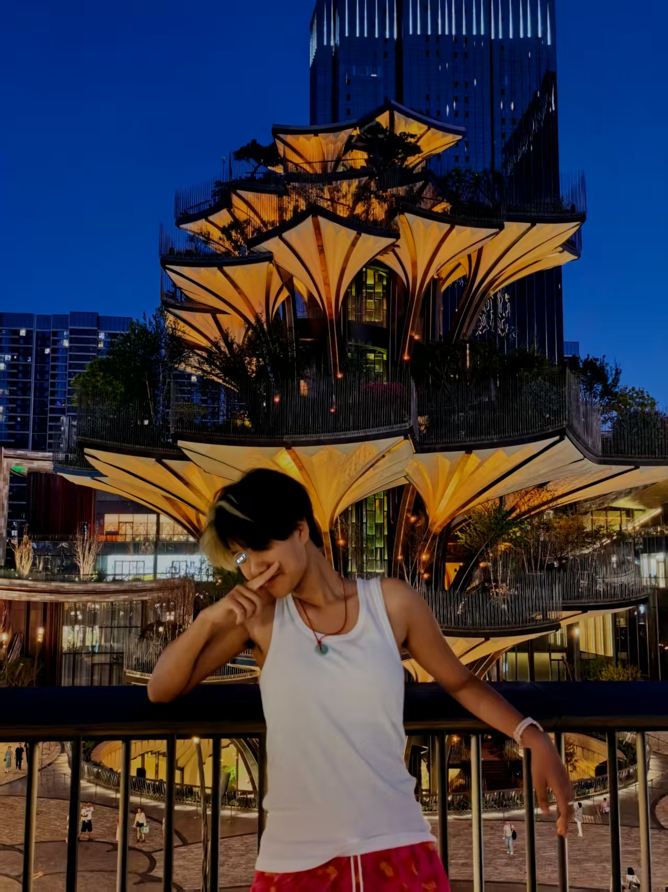

高可沁
计算机科学与技术专业 · 学习与科研探索中
g15339201160@163.com个人简介
大家好，我叫高可沁，目前就读于计算机科学与技术专业。在学习和实践过程中，我积累了扎实的专业基础，具备较强的学习能力和解决问题的能力。我熟悉 C 语言、Python 数据分析、网页开发等，也在一些比赛和科研创新（数学建模、国际基因工程）团队协作和项目实践中锻炼了沟通与组织协调能力。
在兴趣方面，我热爱探索新知识，喜欢阅读、运动、科技创新等，这不仅丰富了我的视野，也帮助我保持持续学习的动力。未来，我希望在计算机和数据科学等领域不断深耕，把所学知识与实际需求结合，为社会发展贡献自己的力量。我的目标是通过不断的学习和实践，成为一个既有专业素养，又有社会责任感的人。我的 GitHub 账号为：gaok1-8。
研究兴趣
多模态大数据整合分析
云端协同计算平台
Transformer 在蛋白质/基因组序列分析中的应用
AI 驱动的疾病预测和诊断
擅长技术
Python
PyTorch / TensorFlow / Keras（深度学习）
数据分析
序列预测、生成模型（VAE, GAN）（alphafold）
深度神经网络